嗶嗶～手錶整點響了兩聲，我在睡袋中也翻了一個身，看著公車站外昏暗的天色，太陽很明顯還沒有爬出地平線。
現在到底幾點呀？凌晨四點還是五點？
在帳篷中搜索著手錶的蹤影，一看時間發現早就已經六點整了。
現在不只天黑的時間變早，相對的連日出的時間也跟著往後延，一點也沒有天亮的感覺。
稍微賴床了半個小時，想等到天色亮一點才起床，這樣感覺外頭沒那麼冷。
六點半的時候爬出帳篷，開始收拾行李，不到七點的時候就可以出發了，這時候天空才慢慢的有了亮度。
除了季節的變化之外，同時也因為天空雲層很厚的緣故，就算太陽出來了也被遮蔽住，陽光照射不到地上。
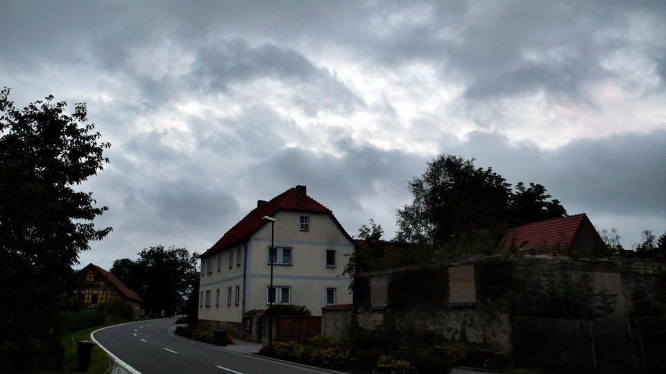
嘴裡吐出的氣立刻就變成白煙，自得其樂的玩了一下就準備上路出發了。
不知道太陽在什麼地方，搞不清楚東南西北，順著昨天沒有騎完的路接著往下走，遠方的汽車頭燈看起來很像拿著火把的人們。
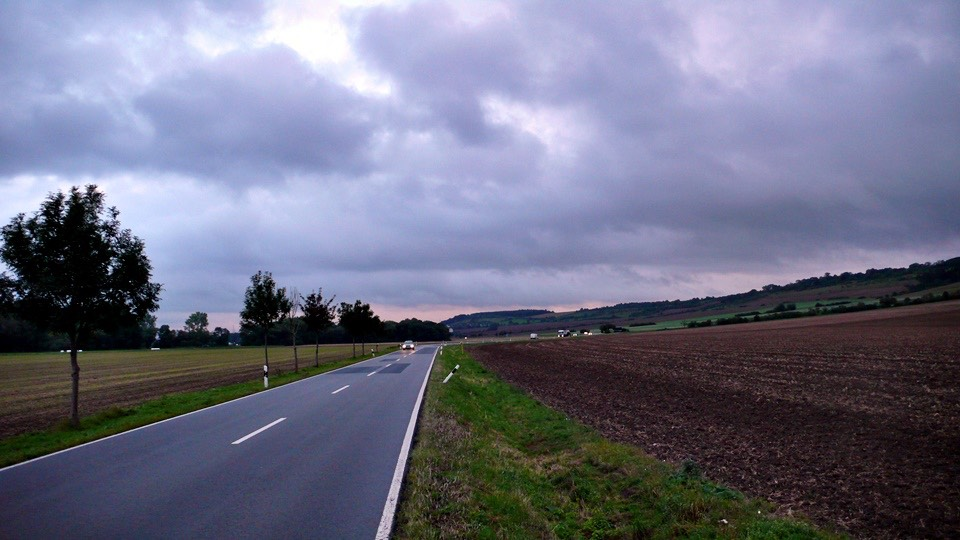
不論那一天在旅遊服務處研究多久的地圖，相機中有沒有這些地圖的照片，路線規劃得再完整，只要道路一施工，那就全部玩完了。
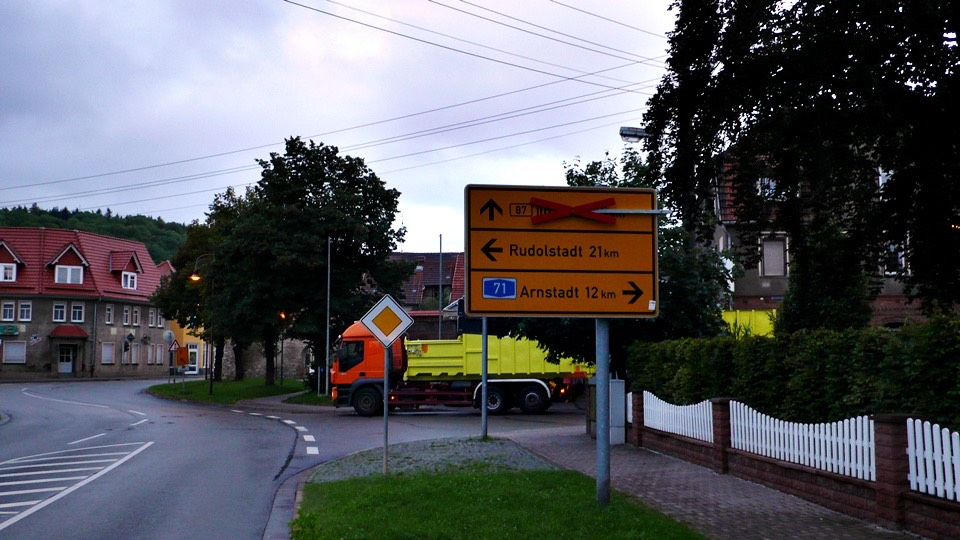
我要去的八十七號道路被加上一個紅色的叉叉，往左往右都不是我想去的地方，只好不管叉叉打的有多大，照樣給它直走。
因為這些禁止通行的標誌大多都是畫給汽車看的，就算前面施工好了，自行車稍微鑽一下還是可以過得去。
直走的結果就是這樣，道路封閉，路面沒了，前面標示左轉，但沿路都是坑坑洞洞以及機械怪手，怎麼鑽也過不去。
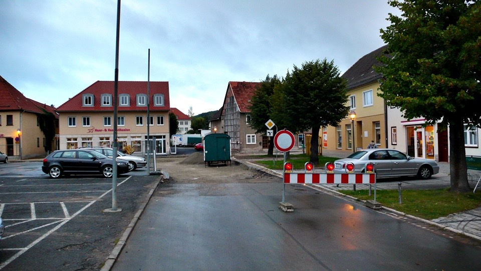
沒辦法的情況下只好選擇繞路，施工的時候會有改道的標示，用一個字母『U』當作簡稱，跟著『U』走穿過這裡。
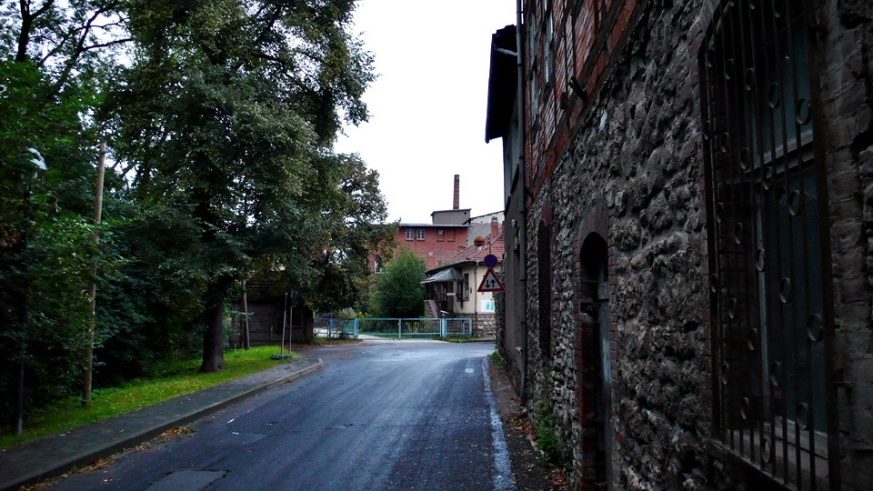
這種拱橋形的建築，有可能是高架道路，也有可能是古代的引水道。
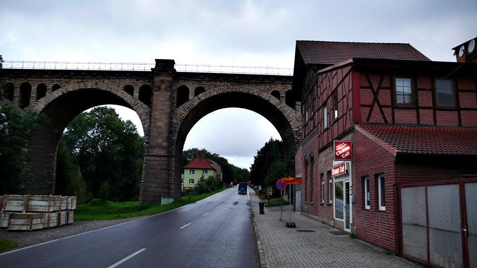
目前依然還在改道的狀態，本來以為只是兜一個彎而已，但是一改道就是幾十公里，騎了好久才又接上八十七號道路。
被指引著走奇怪的路離開這個城鎮，路面居然還是用石頭鋪的，就算換了新的輪框也不能這樣傷害車子，騎在較為平整的排水蓋上前進。
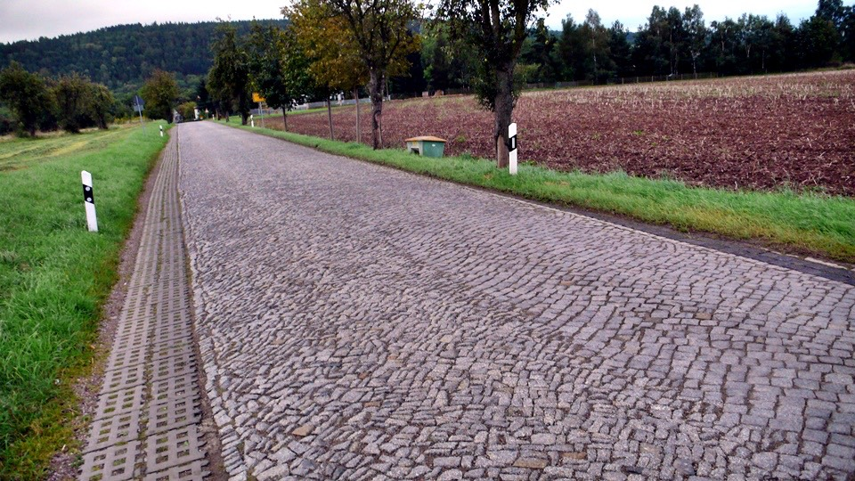
還好這段石頭路只有幾百公尺而已，接下來眼前就是美麗的景色和遼闊的大地。
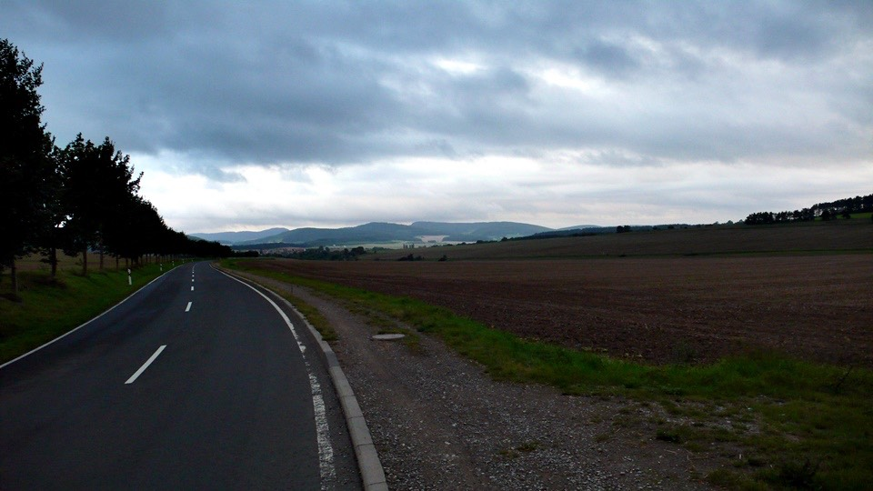
這就是那個改道的牌子，也就是我說的跟著『U』走，目前不知道在哪條路上，但是只要跟著走就能到抵達下方標示的馬路跟城鎮。
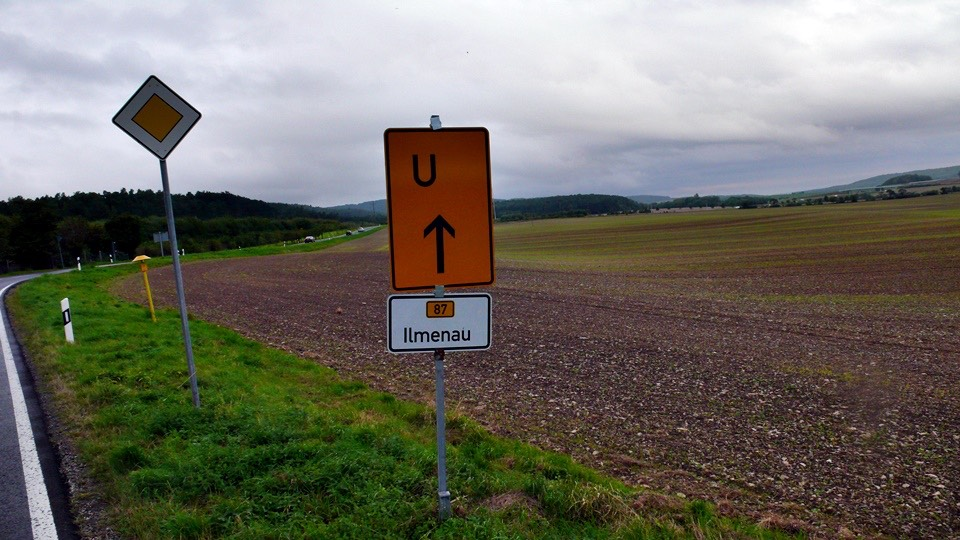
Ilmenau也是一個我沒聽過的城鎮名字，但是它對於穿越德國是很重要的，黃色八十七號只能引導我騎到這邊。
接下來就要靠相片地圖和運氣才能走完後半段的德國。
約莫九點的時候在這個民宅的車庫外面找到有電的插座，坐在地上搓搓冷冰冰的雙手準備寫遊記。
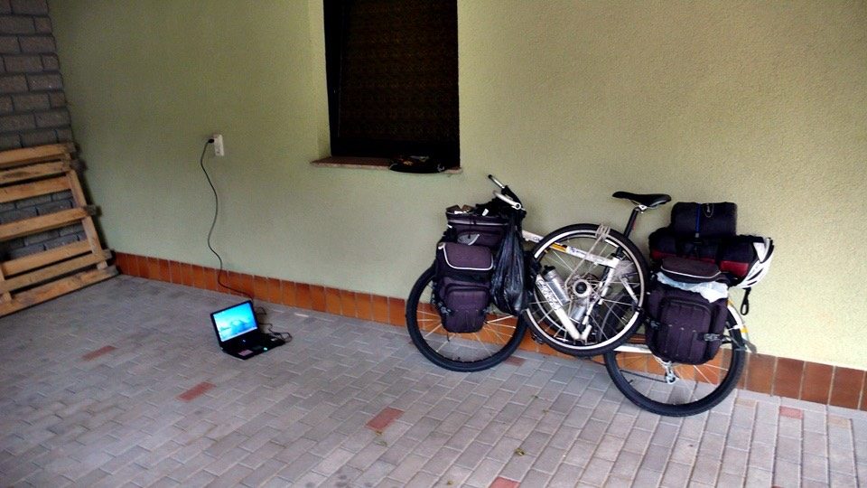
五分鐘後家裡的主人就從二樓走出來，是一位老伯伯跟老婆婆，看到我在這邊當然讓他們有點驚訝，但是並沒有當場把我趕走。
語言不通的時候、需要自我介紹的時候，都被小多和這些裝備給代勞了，看了一眼就知道我是幹嘛的。
所以很幸運的得到主人家的許可，在這邊充電兼整理遊記，同時將時間拖晚一點，看接近中午的時候氣溫會不會回升。
一路順著『U』走，還真的就讓我走到了這個城鎮，感覺樹木有點多，越往西南騎越接近山裡，難道這邊是山中小鎮嗎？
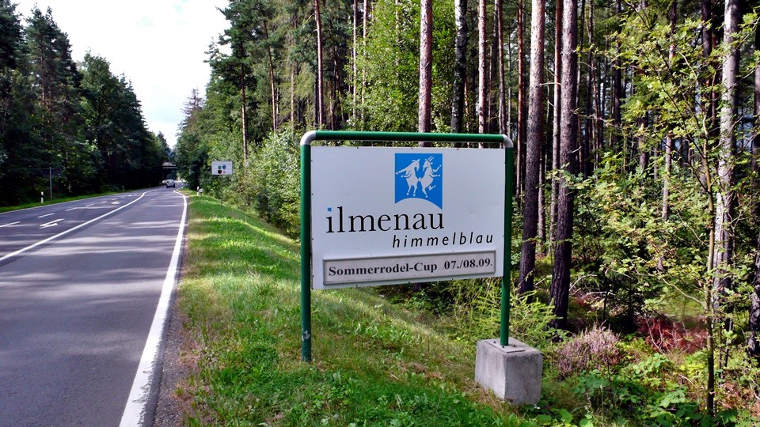
兩頭屁股碰屁股的山羊是這個城鎮的標示，看起來跟波茲南的城市圖案很像。
進入城鎮後一小段路，又是施工改道的標示，看著前面的道路有車輛開出來，既然車子能走，那小多一定也過得去。
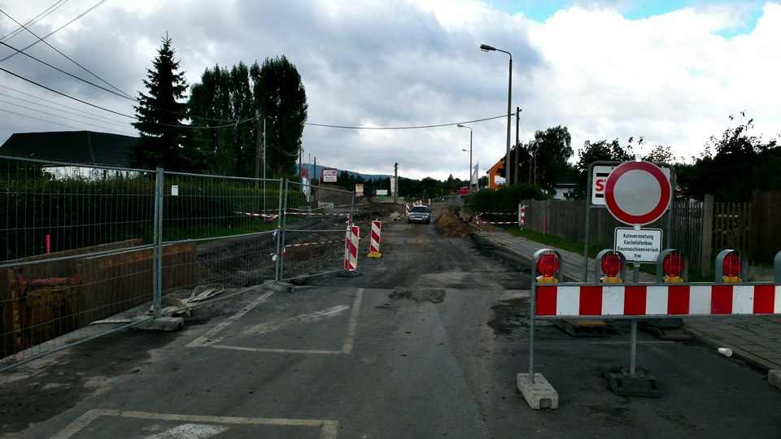
所以我就不管改道的標示寫些什麼，直接走施工的道路，結果那輛汽車並不是從對面穿越而來的。
它是跟我一樣想硬闖，但是發現過不去，所以折返的車輛，汽車過不去可是小多卻可以，省下了一段繞路的功夫，還是走直線比較快。
在市區的某一個十字路口稍停片刻，我也不知道這邊有什麼特殊的地方，但是它有無線網路的訊號可以用。
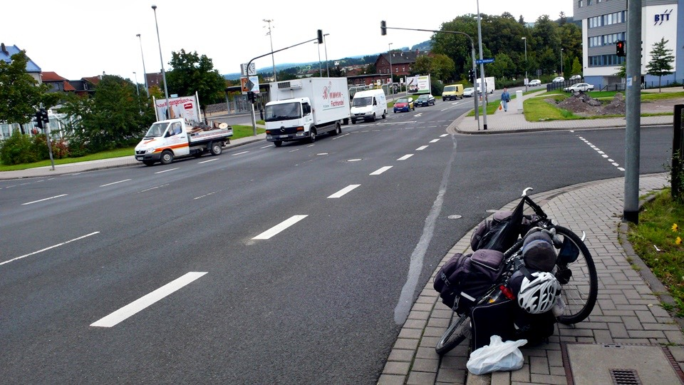
找無線網路需要運氣跟實力兼備，花十五分鐘將遊記上傳，然後要繼續邁向今天的旅程。
在這座城鎮要進行道路轉換的工作，依照自己規劃的路線，要先從八十七號轉成八十八號，然後再轉成二四七號。
可是兜了一小圈怎麼也看不到這些道路的編號，筆記本中寫著的地名在這裡也找不到。
最後選擇看公車路線圖的方式來脫困。
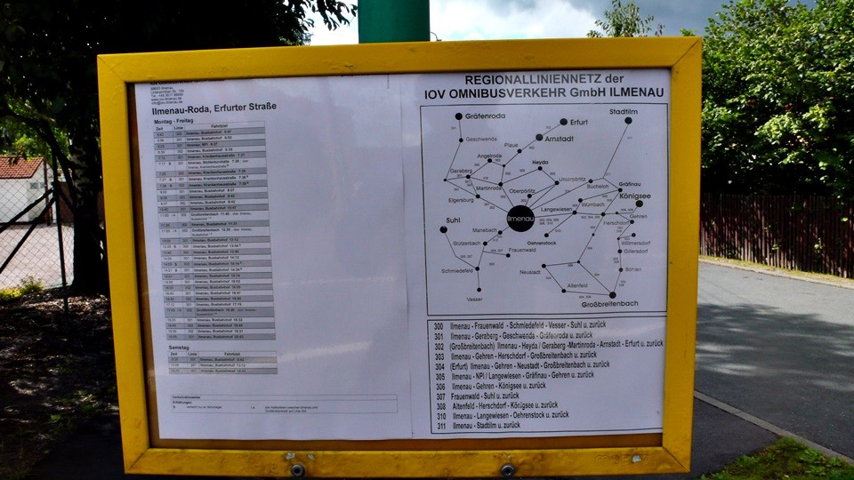
中央的黑色大圈圈就是目前的所在位置，我要去的地方在西南方。
看著站名跟開往的公車編號，在路邊等公車經過，然後看它開的方向跟在後頭騎。
這樣又可以往正確的方向移動，在路邊稍等片刻，比迷路瞎晃還要省事。
德國很多漫畫式的告示牌，看了就覺得很有趣。
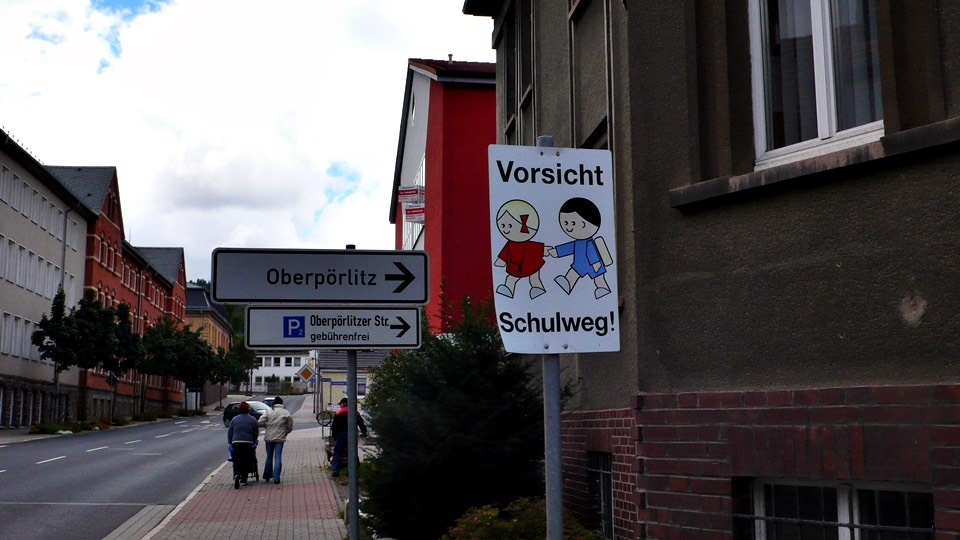
騎著騎著～掛在把手左邊的塑膠袋破了一個洞，裡面裝的可都是蘋果，就這麼一拖拉庫的全部掉到地上，剛好這邊是下坡路段。
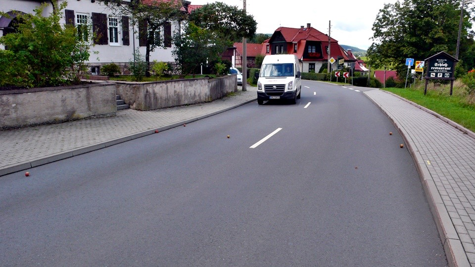
很快的蘋果們就滾得大老遠，想到要一顆一顆撿回來就覺得很累，剛好出現一輛廂型車，託它的福讓我少撿一顆蘋果。
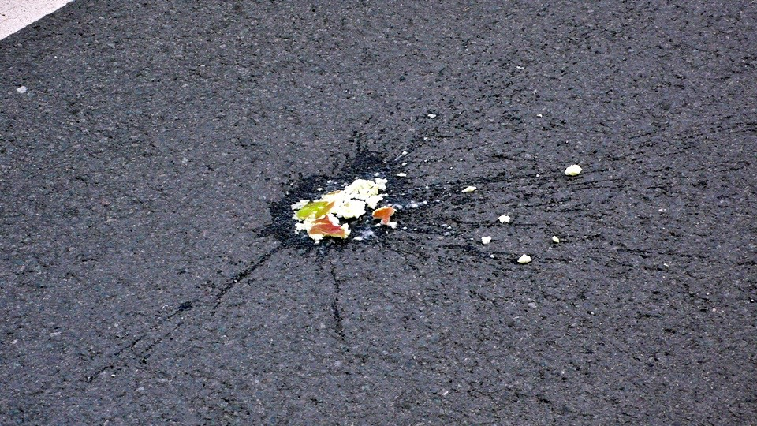
安息吧～蘋果，幫你寫一個墓誌銘。
『路邊摘的比較酸，好像在吃檸檬的感覺。』
早上在麥當勞的廁所裝了免費的自來水，中午的時候則去加油站打氣，這也是免費的服務。
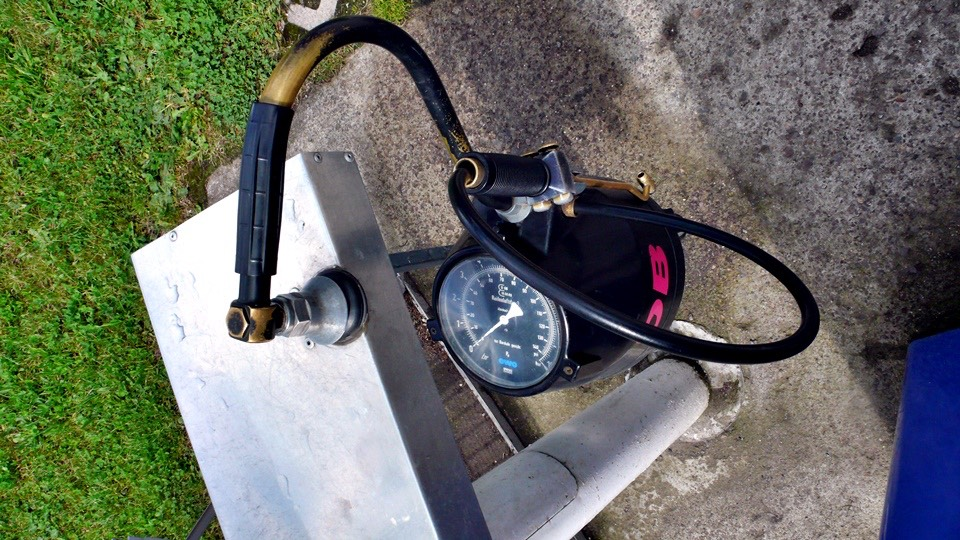
使用很簡單，將氣嘴跟打氣桶接在一起，有兩個按鈕、一個是加一個是減，按下去就可以自動打氣，還附帶一個超大的氣壓表。
新的輪胎裝的不知道是哪一牌的內胎，漏氣的情況蠻嚴重的。
之前在波茲南就有發現這個問題，明明打滿了氣也沒有在騎，在車房中放了兩天，胎壓就從六十掉到三十八。
今天打氣的時候也是同樣的問題，胎壓一量只有五十不到而已，難怪騎起來覺得很有黏滯感。
很明顯的在正進入山區中，一開始只是小山坡還過得去，反正這一路上都是這樣的地形。
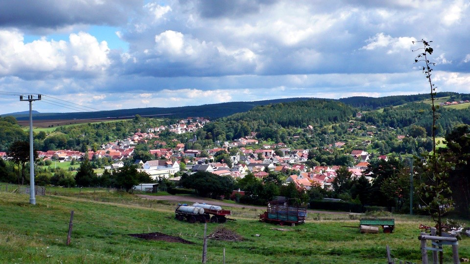
進入城鎮之後就有點肚子餓了，中午之前都在啃昨天買的黑麥麵包，今天還沒有機會花錢買東西。
在什麼地方買東西價錢最便宜呢？
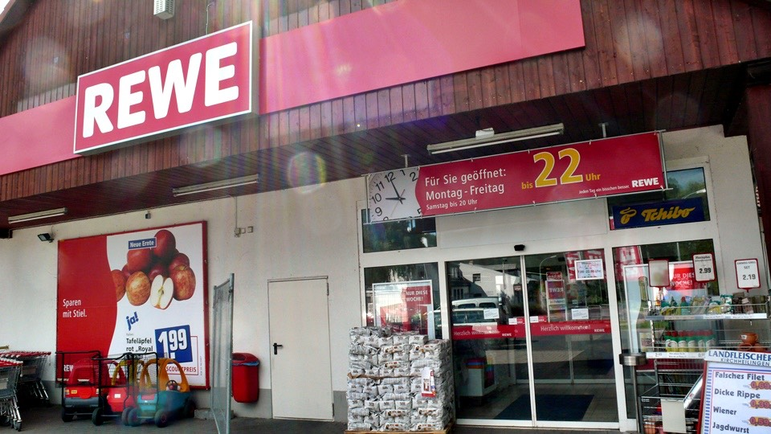
不論在世界各地答案都一樣，越大間的超級市場價格越實惠，這間REWE是連鎖超市，一路上已經看過好多間，今天終於要來光顧了。
琳瑯滿目的商品，標價也都很友善，就算每天只有兩塊歐元的生活費也能買到很多好東西喔。
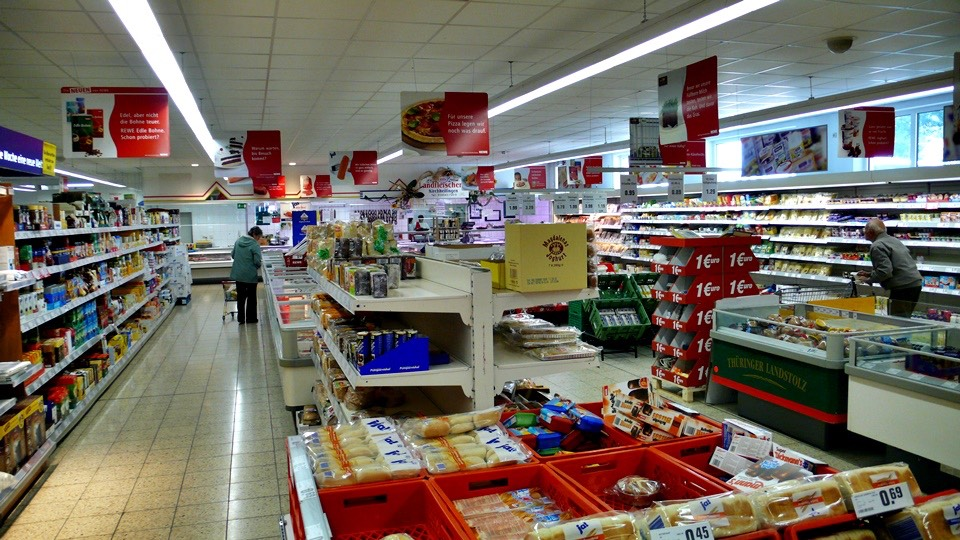
新鮮烘培的麵包區，種類很多，但吃這些穀物麵包已經吃的有點膩，這幾天都在啃麵包，既然在超市採購，那就換點口味吧。
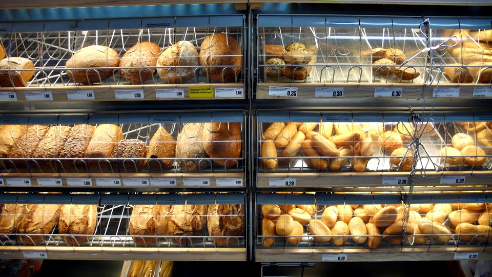
超便宜的吐司區，右邊的標價0.69，中間的標價0.45，看了半天發現根本就是一樣的東西，連廠牌都一樣，唯獨價錢不一樣。
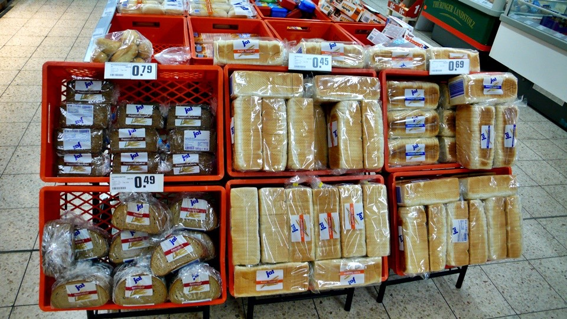
拿一條便宜的吐司，繞了一圈商店，再買一條大份量的王子巧克力夾心餅乾。
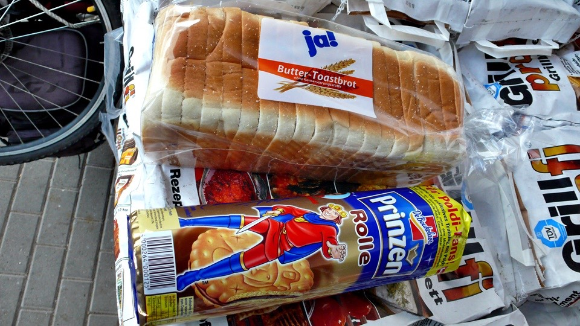
跟吐司一樣長的尺寸，這兩包足以讓我吃上一天，剩下的明天繼續吃應該也沒問題，只花了一點七三歐元就買了好吃的食物。
巧克力餅乾比較貴一點，但是這個看起來就比較好吃，貴一點也還過得去啦。
從路邊進入超市，一走出超市就迫不及待的拆了吐司開始吃，然後騎車上路，完全沒發現自己正在往回騎。
等騎到同一個分岔的路口時才驚覺自己是一個笨蛋，這一進一出超市，立刻就迷失了方向感。
好幾次我都很擔心自己會不會睡醒之後，搞不清楚東南西北，然後花上一整天的時間在騎回頭路。
也許這是天意吧，剛才在這個分岔路口我是用猜的，才選擇走超市那條路，結果老天又讓我走回這個分岔路口。
問一下正在鋪地板的當地人，我要去的地方該怎麼走才對呢？
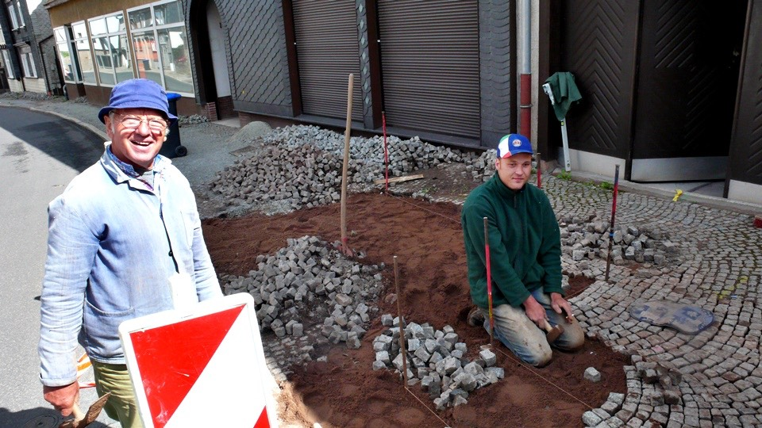
一問之下果然很有幫助，剛才我選的那條路連接不到我要去的地方，依照他們報的路繼續往下走。
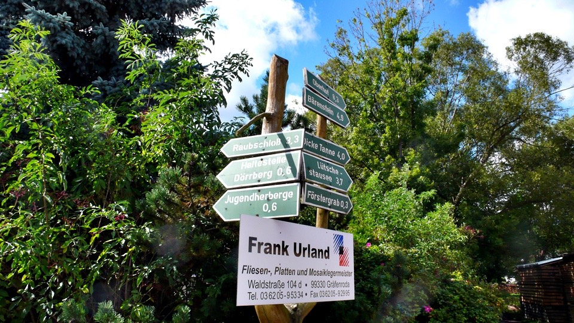
路標越來越小了，從本來的一大片鐵板變成木頭做的綠色小指標，依照筆記本中的地名，我要去的地方是Dorrberg。
果然當地人跟我說的路是正確的，心裡非常的慶幸自己出了超市馬上就迷路回頭走，才能問路走上正確的路。
但其實這樣還是不正確的，我太小看自己迷路的天分，就算老天給了我回頭走的機會，也讓我問了路人，甚至找到正確的路標。
這都不足以跟路癡到了極點的我相抗衡，最～最～最～根本的錯誤就在於，筆記本中的地名寫的是錯的。
我根本就沒必要去Dorrberg這個城鎮，往這邊走是入山的方向，這裡完全是一個深山的觀光地。
之所以會將錯誤的地名寫在筆記本中，也是因為那一份地圖實在太詳細了，幾乎列出了所有的道路和地名，搞得整本地圖亂糟糟的。
一堆密密麻麻的小字，怎麼有辦法搞得清楚這個小鎮的名字，對應的是哪一條路上的圈圈記號，就因為這個小錯誤，所以接下來要開始爬山。
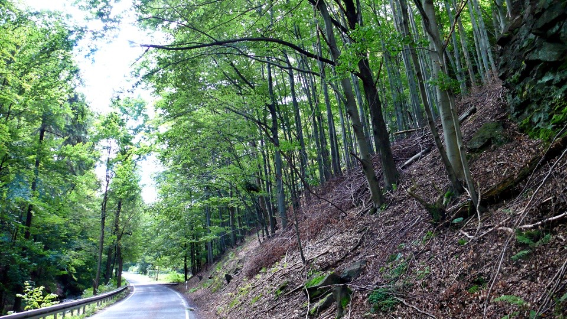
當我發現自己迷路的時候會很少拍照，所以現在只要覺得自己正處於迷路狀態，那就要隨時記錄迷路的每一刻。
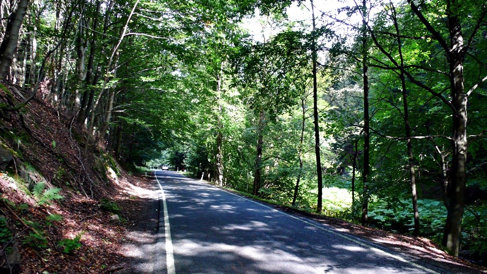
景色是很漂亮沒錯，只是路越走越小條，連中央的分隔線都懶得畫，沿路都是小溪跟高山，更別提這一路上都是爬坡路。
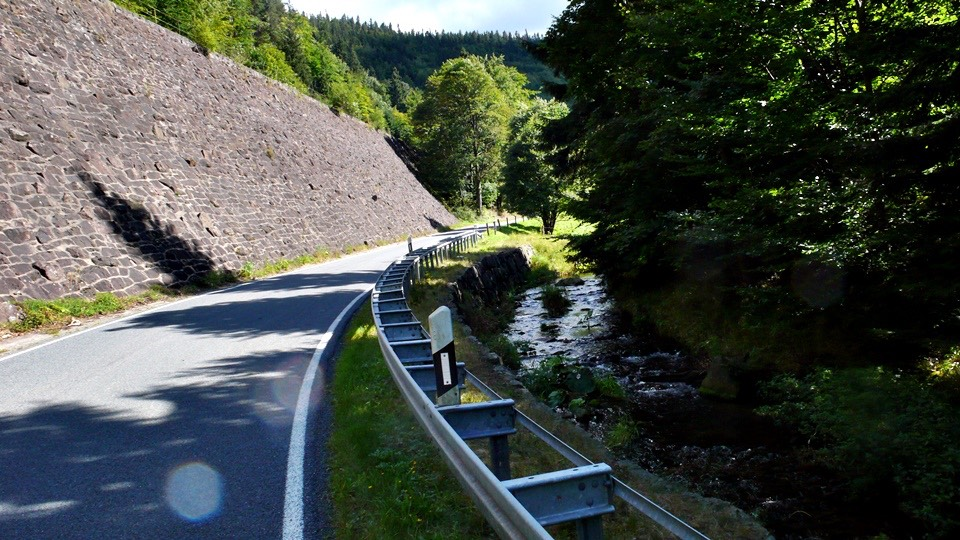
滿心疑惑的騎車，心裡想著我不是正應該從八十七號接上八十八號然後接上二四七號嗎？怎麼會騎在一個連路名都沒有的地方？
有很高的把握認定自己迷路了，旅行還有一個小小的堅持，如非必要，絕對不走回頭路，迷路了就想辦法繼續往前走，接回正確的路。
前面的標誌很熟悉，坡度十二度的大爬坡，之前在哈薩克騎車，只要是上坡路段，通通標誌十二度，非常的懷念。
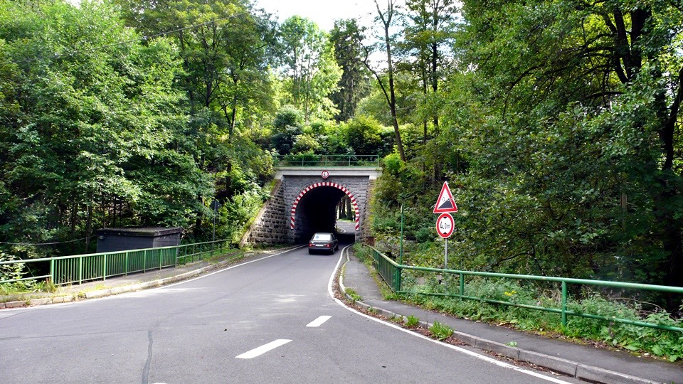
在哈薩克的時候是標好玩的，但在德國這是標真的，過了這個小隧道，接下來整整牽了一個小時的車，整個爬坡陡到沒辦法用騎的。
一路牽車上來的時候，氣溫只有八度，依然熱得全身冒汗，脫掉了厚衣服繼續牽車。
爬到了這邊冷風吹個不停，流汗加上吹風會冷死人的，重新穿回厚衣服保暖。
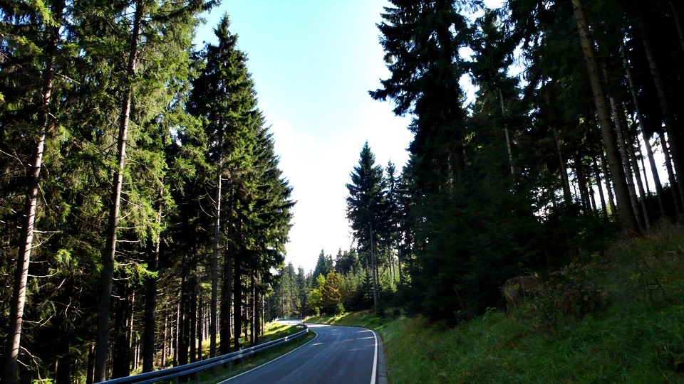
這片山種植的都是杉樹，它們的特色應該是生長在寒冷跟高海拔的區域。
這片漂亮的杉樹林還是免不了遭受人為的砍伐，變成如此令人鼻酸的畫面。
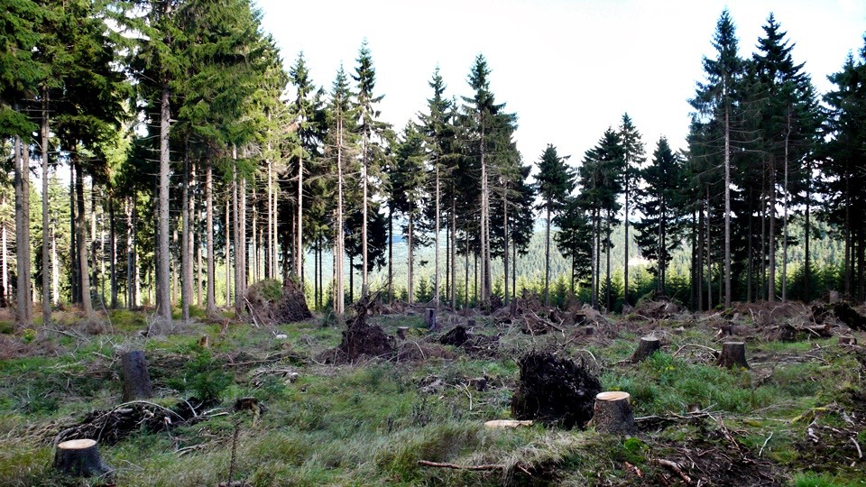
德國的這些被砍伐的樹木，是屬於「間伐」的樹木。
當然，間伐並不是代表所有的樹木都是「隔著一株隔著一株」的砍，而是有計畫的對於森林進行養護保護的工作。
間伐，簡單的說，因為過去人類為了自己的方便，將所有的原生林改種一些有經濟價值的樹種，
其中檜木就是一種。但是因為在種植的時候並沒有考慮到樹木與樹木之間的距離，
於是高高低低好的壞的樹木全都雜陳一處。
這樣的情況造成幾個影響
1.樹木的根無法深入土地，對於水土保持沒有太大的功效。
2.劣質的樹木為了生長搶了其他樹木的養分，造成樹種無法順利成長
3.過於稠密造成小樹沒有辦法接受到足夠的陽光
整體來說，沒有間伐制度的人造林區的樹木，對於環保反而是一項負面的功用。
於是發展出了間伐林的方式，也就是讓每一株成熟的樹木有一定的生活空間，
所以現在無間伐林的每一平方米的密度大約是間伐林的2.4倍
爬升了好幾百公尺之後，眼前的景色豁然開朗，哇塞～我到底牽車爬了多高呀？
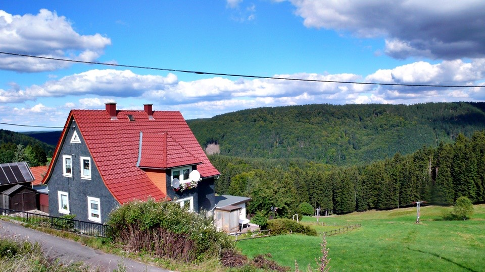
同時～我的老天爺～我到底騎到什麼地方來呀？
請賜予我一張地圖吧～這邊雖然是山中，但卻是觀光地，也因為如此路邊設立了很詳細的地圖，喘著大氣研究自己身在何方。
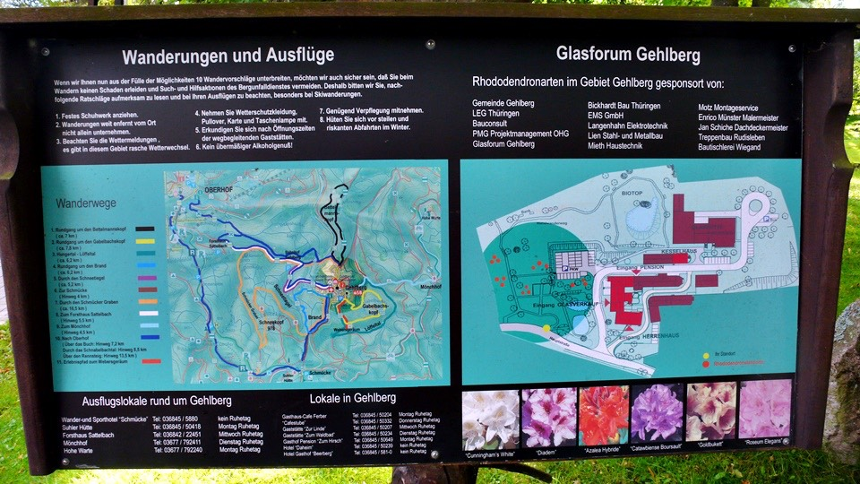
路癡還有一個特色，就是地圖看不懂。
這個告示牌的地圖分為左右兩塊，右邊是這個鎮上的介紹，連公園樹木種植的位置都有標示出來，但是一點幫助也沒有。
左邊則是這座山的地勢圖，外加幾條登山健行的路線，這些路最好騎單車有辦法走，所以也沒有任何幫助。
一路順著我來的路繼續往上爬，這些房子蓋在這麼高的山上真是了不起，這裡同時也有好多間的旅館，心裡想說今天不如就睡在山裡吧。
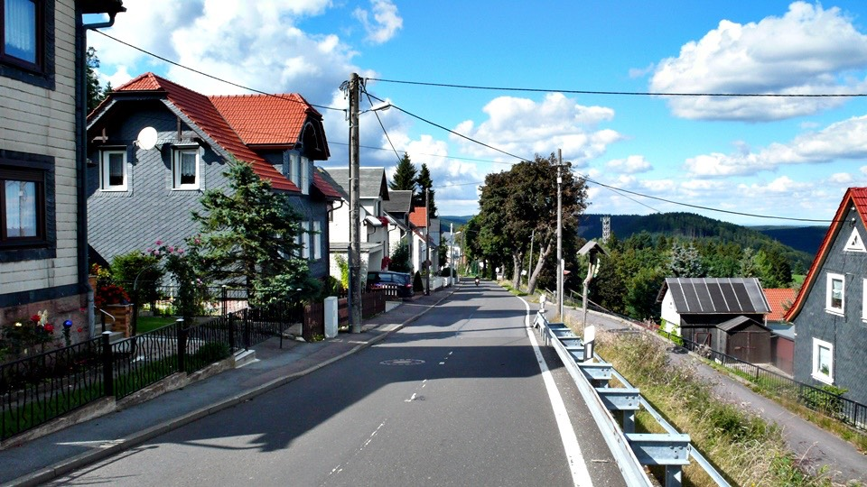
找一間舒服的旅館住上一夜，明天再想辦法離開山區。
甩甩頭把這個不切實際的想法甩掉，此刻心中已經有九成的想法打算往回走，反正這一路都是下坡，
爬上來雖然很累又花時間，往下滑大概十五分鐘就可以回到山腳下。
現在重新回到那間超級市場，走大條的馬路才是正途，在這個山裡迷路，跟要去巴黎是扯不上關係的。
心中還是有一成的想法，想看看這一條走錯的路，它的盡頭到底是什麼地方？
就算只是一間超豪華山野旅館的停車場，我也要去看看這一路上迷路究竟是為了什麼，總不能爬了老半天然後只是個屁。
所以繼續保持在迷路的狀態，並且繼續的往更高的山上爬，在這個同時我已經認定接下來是要回頭滑下山的，現在只是去找一個答案而已。
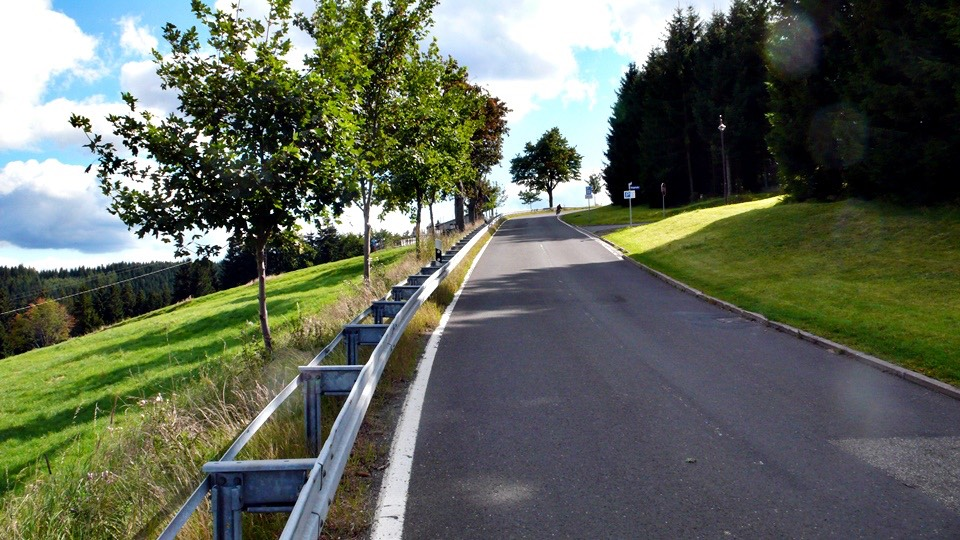
不是『人生在世上究竟是為了什麼』這種大哉問，我只想單純的知道這條路究竟通往什麼地方。
咬牙切齒的改用騎車的方式往上爬，這沿路上都有奇怪的牌子，我終於看懂它的意思了。
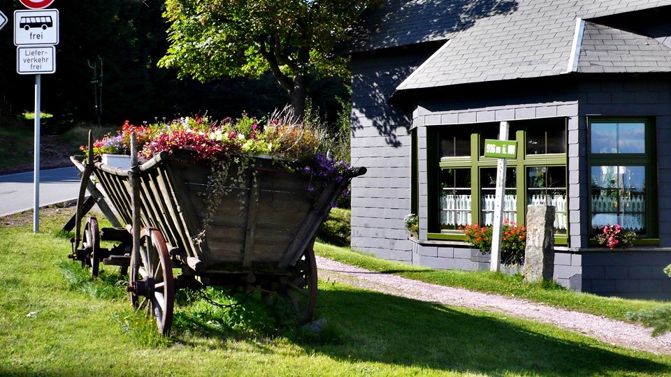
照片右邊那個916m的綠色牌子，原來是海拔高度的指示牌，終於可以趁機將手錶錯亂的海拔計修正一下。
一不小心迷路，莫名其妙的就爬到將近一千公尺高的山裡。
若是現在回頭走，那這一千公尺的山就等於白爬了，這些汗水也就白流了。
所以就算再怎麼迷路，絕對不走回頭路，沿路又看了好幾個標示地圖的牌子，認真的規劃該怎麼往前走，同時又能下山。
就算要兜一個大彎也沒關係，最後真的讓我找到一條路，騎起來會變成U字型，卻有辦法接上我要去的城市，而且這次的地名是正確的。
因為這裡的景色很漂亮，來騎車的人很多，七八成都是開車然後載著腳踏車來兜風，只有很少部分是自己騎車上來。
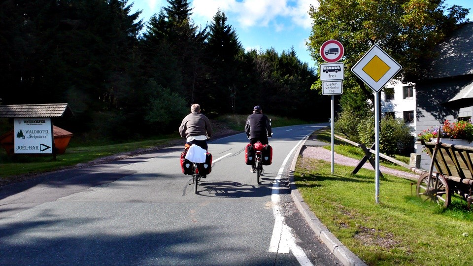
遇到同伴就一起騎一小段，本來以為他們只有兩個人，結果這兩個是落單的，它們還有一票至少十個人，正在前面的最高峰拍照合影。
這個景色真的讚！還好今天沒下雨，不然就沒有辦法欣賞如此遼闊壯觀的自然美景。
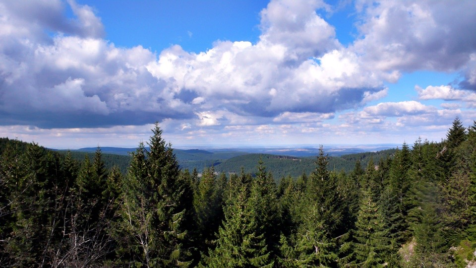
今天是星期三，非常的巧，我也是屬猴的，正好符合一首童謠，『星期三～猴子去爬山～』原來這是一首預言詩>"<
沿路上不時看見被砍伐的森林，像這樣的木材集中場也是隨處可見，簡直就是樹木的墳場。
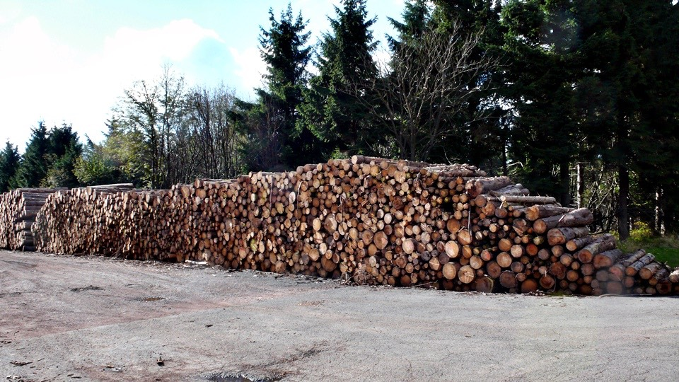
看到這些被砍下來的樹，和一整片山野美麗的綠意相比較，更讓我堅持絕對不要將遊記出版成書，就算因此而少砍一棵樹我都覺得划算。
補充說明：這些砍伐下來的樹木，是間伐計畫進行的產物。
這也剛好給我們上一課，「環保」不代表什麼都不用，而是要有效的運用地球資源，還有就是使用之後的資源，該等量的還給地球。
順著自己規劃的路，終於走出了迷路的窘況，回到了一座要經過的城市，接下來又能順著大馬路走。
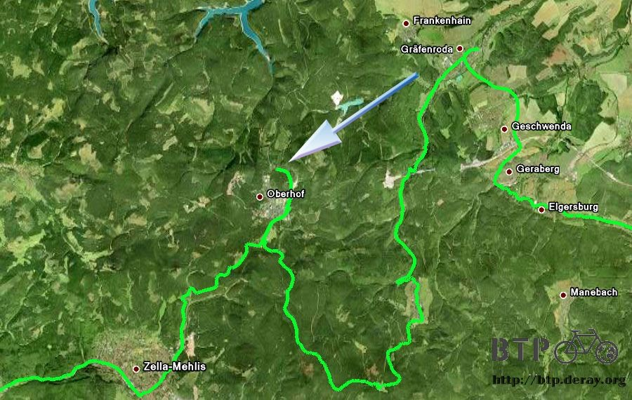
本來中午在右上角的城市，正確的路幾乎是直線的往Oberhof這個城鎮走，莫名其妙的我就拐錯了彎，然後走了一個U字型去爬山看風景。
好加在還是走回了原本的路，不幸的在抵達Oberhof之後，一時太興奮，就開心的往北邊騎個不停。
喂喂～巴黎在西南邊呀，往北是要騎去哪裡？
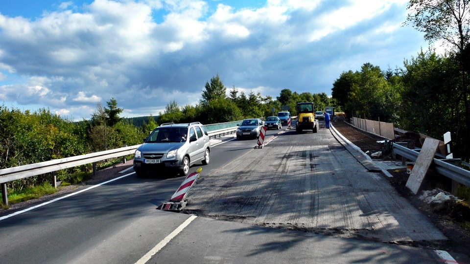
這就是山中小路跟大馬路的差別，又變成了標示清楚的寬敞道路，迷路的狀態畫下休止符，今天就當作額外的觀光吧。
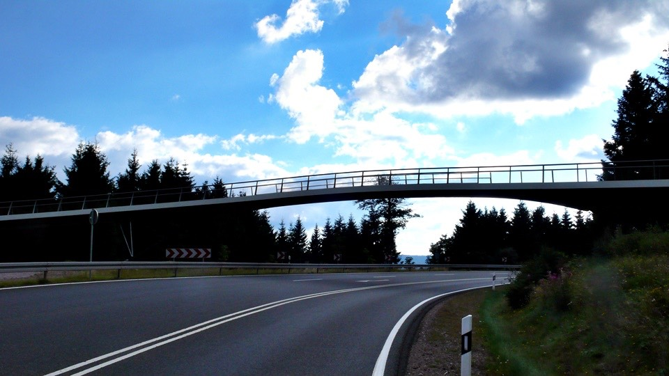
俗話說的好，有上坡就有下坡，結束迷路的同時，也是享受下坡甜美果實的時候，平坦的路面可以肆無忌憚的往下衝。
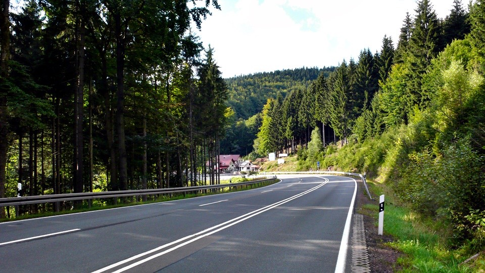
將今天龜速的騎程速度一口氣拉高平均，不然騎那麼慢，不知道何時才到的了巴黎？
原來那一天在旅遊服務處看的地圖不完全正確，雖然地名跟路線是對的，但是道路編號完全錯誤。
只好一邊騎車一邊注意有沒有『i』的看板。
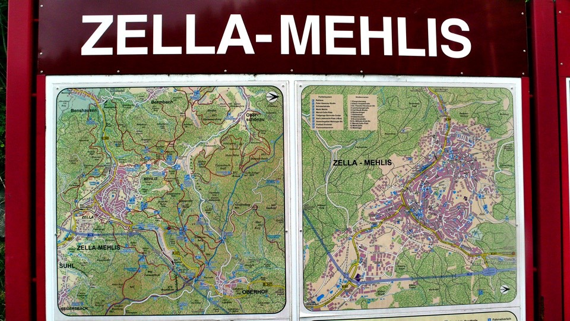
捨棄跟著路名走的方式，這樣騎車太危險了，會迷路一輩子，還是用地名作為跳板來移動會比較保險。
這些地圖還有一個很瞎的地方，正上方通常都不是北邊，難怪我看老半天都看不懂這是在畫什麼，原來北邊在右邊，挖哩咧...
眼尖的又發現了路邊的水龍頭，很久沒人用的感覺，都結了蜘蛛網，試喝了一小口發現有奇怪的味道，這個只適合拿來擦臉，還是別喝下肚的好。
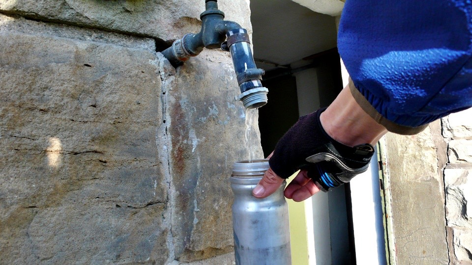
耶～下山完畢，另一個漫畫型的告示牌，藍天白雲一整天的感覺真好，明天跟後天以及大後天都這麼保持下去吧。
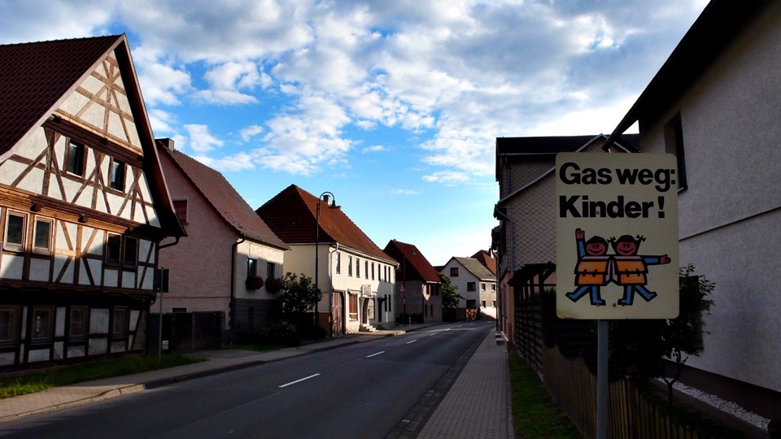
右邊的汽車是真的，那不是模型，它在停在路邊等著我優先通過，結果我卻停下來拿出相機拍照，害得它也不敢先開走。
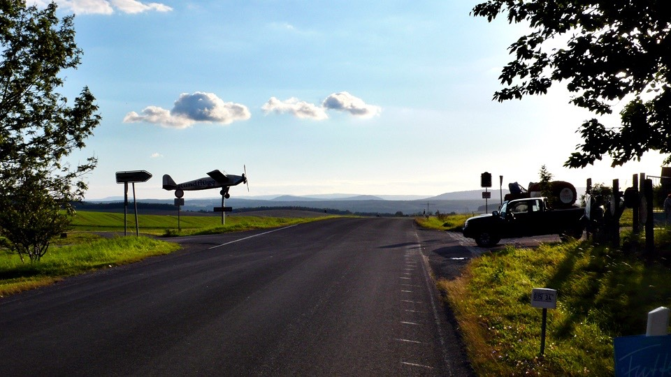
左邊的飛機不知道是真的還是假的，昨天看到注意飛機的告示牌，開車會撞到飛機的話，那大概只有撞到這一架才有可能了。
從這邊往前走又是蜿蜒起伏的地形，對於剛從高山下來的我，簡直跟如履平地沒什麼兩樣，當然如果真的有平地可以騎是再好不過了。
只有一根的風力發電機，看起來很寂寞，但依然很認真的在旋轉發電，德國很常看見風力發電的設施。
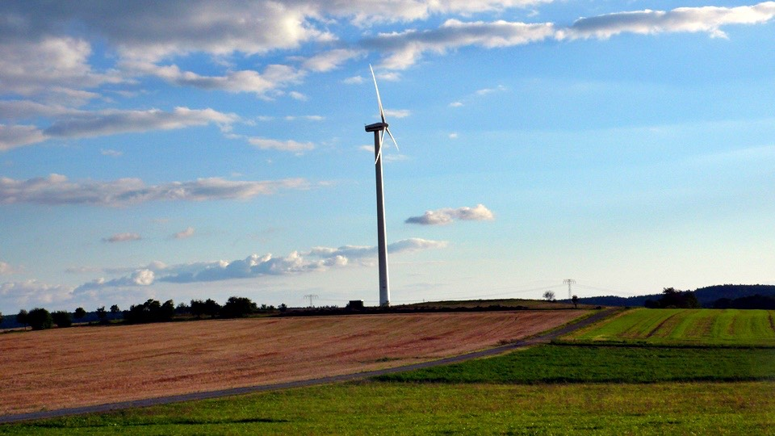
這也表示這邊的風勢很大，而且吹的是逆風呀～難道選擇逆天，就注定要騎在逆風的路上嗎？
這張照片對於一般人來說是沒有任何意義的，但對我來說可是站在這個路口又叫又跳的興奮了老半天。
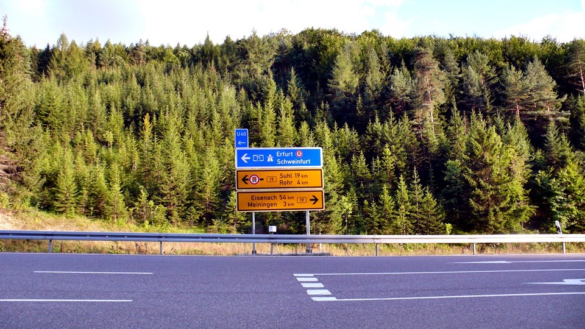
將地圖照片存在相機裡頭，這一路上不停的拿出來研究該怎麼往下走，沒有這些地圖真的是走不下去。
看到這個路標的同時，總算找到一個道路指示牌的路名跟地圖上的路名標示都相同的十九號道路！
今天預計要騎的八十八號和二四七號，則是一整天都沒看見，盡信地圖不如無地圖，看路標騎車還是很重要的。
從這邊左轉之後有一個Meiningen，短短三公里，看來今天的落腳處就是這邊了，在城鎮中過夜總比睡在荒郊野外來得保險。
這個沒聽過的小鎮看起來不怎麼小，像這種規模的建築物隨處可見，昨天睡了公車站，今天要找不同的地方過夜，尋尋覓覓中～
歐洲的小城鎮感覺都很漂亮，沒有大城市那種厭惡感，一間超市外頭掛著一堆廣告牌，最下面那一個問我肚子餓了嗎？
就這麼被騙了進去，肚子是有點餓沒錯，可是卻不是進來買東西的。
耶～放置推車的牆邊有插座，很神奇的居然也有電力供應，見怪不怪的歐洲人，蹲在牆邊完全不引人注意，在這裡充電半小時。
然後很快的就八點了，天色一下子就要轉暗，如果要繼續蹲在這邊將遊記給寫完也不是不行，只是會拖到晚上十一點而已。
隔天的當地報紙會有旅行者被凍死在超市門口的新聞刊出來。
八點之後在這個鎮上找適合過夜的地方，空屋出乎意料的多，輕鬆就找到一間超大的廢棄房子，先進去查看一下環境。
一樓有點髒亂，二樓則非常寬敞，像是大禮堂那樣的大小，木頭地板還有一個舞台，在這邊睡覺是沒問題的，只差沒水沒電而已。
分批將行李以及小多搬上二樓，好久沒有爬樓梯了，還好這些樓梯沒有腐朽得一踩即爛，發出拐機拐機的聲音一步一步往上走。
晚上就在舞台上的木頭地板打地舖，今天不擔心會下雨，在這邊睡覺很安心，又寬敞又舒適。
天色黑得早，連帶的睡覺時間也提早，晚上九點躺平等著打呼是目前的生活作息，不睡到早上六點是不會起床的。
這樣算起來一天可以睡上九個小時，這麼充足的睡眠時間不知羨煞了多少人？
因為時差的因素，剛出發的時候跟台灣是零時差，隨著走過哈薩克、穿越俄羅斯、進入歐洲，跟台灣的時差越來越多。
晚上八點當我在尋覓過夜處的時候，台灣已經是凌晨兩點，妳已經睡著了吧。
早上六點當我還在帳篷賴床的時候，台灣已經是正午時分，妳正在吃午餐吧。
很快的我們之間就不再有時差，雖然目前仍然是遠離家的方向往西邊騎，但是離回家的路已經越來越近。
每天、每分、每秒，都靠近一點點。
繼續閱讀：9.6 Peter家
歐洲-歐元－ 1：45 台幣
9.5
總計：1.74元
超級市場吐司、巧克力夾心餅乾1.74元